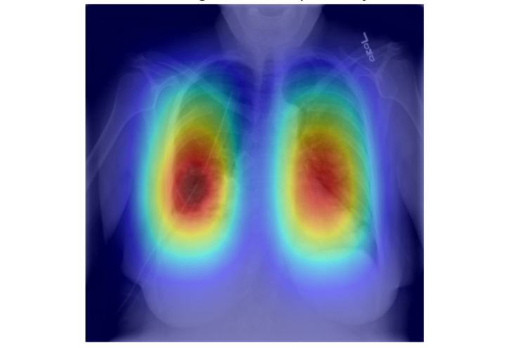
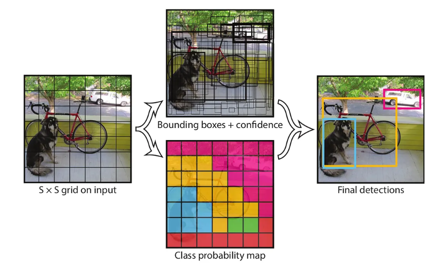
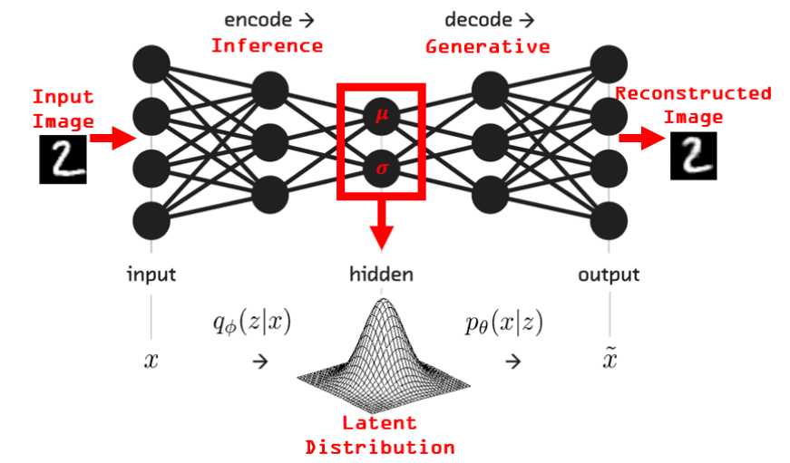
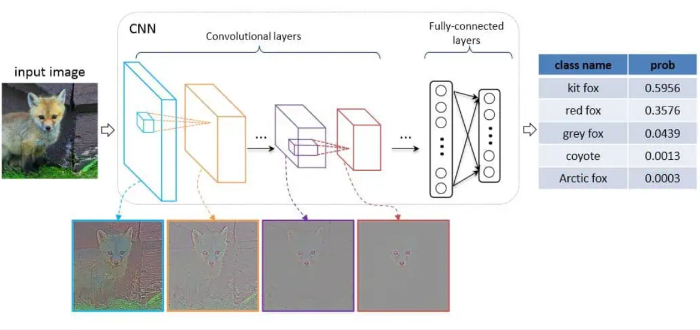

images/pneumonia-detection.jpg
Pneumonia Detection & Localization System
2025
End-to-end pipeline on the RSNA Pneumonia dataset — ~30k chest X-rays
in DICOM format. Handled a 3.4:1 class imbalance by growing positive
training samples from 4,810 to 19,240 through targeted augmentation,
then fine-tuned YOLOv8m on 35,777 images, reaching mAP@50 of 0.25 on
held-out validation. Output includes confidence-weighted heatmaps
showing where the model localizes disease across the lung field.
PyTorch · YOLOv8 · OpenCV · Pydicom · Albumentations
View code →

images/yolov1-scratch.jpg
YOLOv1, implemented from scratch
2025
Rebuilt the original YOLOv1 architecture paper end to end — backbone,
S×S grid detection head, the full multi-part loss function
(localization, objectness, classification), and IoU / mAP evaluation,
all without a framework shortcut. Done to actually understand
single-shot detection at the level of the math, not just the API.
PyTorch · NumPy
View code →

images/autoencoders-vae.jpg
Unsupervised feature learning with autoencoders & VAEs
2024
Compared clustering methods on MNIST — raw K-Means (AMI 0.50) against
t-SNE + K-Means (0.79) and t-SNE + GMM (0.78) — to quantify what
dimensionality reduction actually buys you. Built both a linear and a
CNN autoencoder to compress images into a 2D latent space; the CNN
version produced visibly tighter, more separable clusters.
PyTorch · Scikit-learn · Matplotlib
View code →

images/food-classification.jpg
Food image classification with CNNs
2024
Benchmarked linear classifiers against CNNs across food image data,
MNIST, and Fashion-MNIST, tracking accuracy and training-time
tradeoffs. Varied depth, dropout, and learning-rate schedules to map
out generalization versus overfitting behavior.
PyTorch · NumPy
View code →
images/camp-crunch.jpg
Camp Crunch — personalized student nutrition app
2025 — present
A mobile app that reads live campus dining menus and generates meal
plans suited to individual dietary needs and fitness goals, using a
hybrid recommender that blends nutritional content filtering with
learned user preferences.
React Native · Firebase · Appwrite
View code →